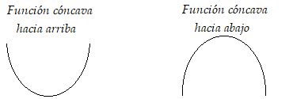
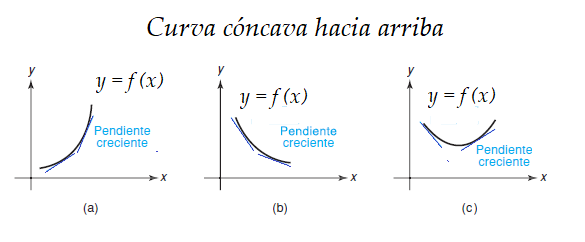
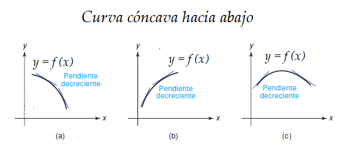

Auditoría e Ingeniería en Control de Gestión
Contador Público y Auditor
Logo Instituto
Hemos visto que la primera derivada proporciona mucha información útil para el trazado de gráficas. Se usa para determinar cuándo una función es creciente o decreciente, y para la localización de máximos y mínimos relativos. Sin embargo, para conocer la verdadera forma de una curva necesitamos más información.
La gráfica de una función, se puede diferenciar en dos tipos


En una función \(y=f(x)\) cóncava hacia arriba se puede observar que las pendientes de las rectas tangentes crecen en valor al crecer \(x\). Luego la función \(f'\) es creciente.
Sea \(f\) diferenciable en un intervalo \(I\). Se dice que \(f\) es cóncava hacia arriba en \(I\), si \(f''(x)>0\) en \(I\).

Una función \(y=f(x)\) cóncava hacia abajo se puede observar que las pendientes de las rectas tangentes decrecen en valor al crecer \(x\). Luego la función \(f'\) es decreciente.
Sea \(f\) diferenciable en un intervalo \(I\). Se dice que \(f\) es cóncava hacia abajo en \(I\), si \(f''(x)<0\) en \(I\).
Sea \(f\) una función diferenciable en el intervalo \((a,b)\).
Si \(f''(x) > 0\) para todo \(x\) en \((a,b)\), entonces \(f\) es cóncava hacia arriba en \((a,b)\).
Si \(f''(x) <0\) para toda \(x\) en \((a,b)\), entonces \(f\) es cóncava hacia abajo en \((a,b)\).
Determine intervalos de concavidad de \(f(x) = x^3\)
Una función \(f\) tiene un punto de inflexión cuando \(x=x_0\), si y sólo si \(f\) es continua en \(x_0\) y \(f\) cambia de concavidad en \(x_0\)
Determinar intervalos de crecimiento, de decrecimiento, intervalos de concavidad y puntos de inflexión de la función \(f\). Hacer un blosquejo de la gráfica de \(y=f(x)\)